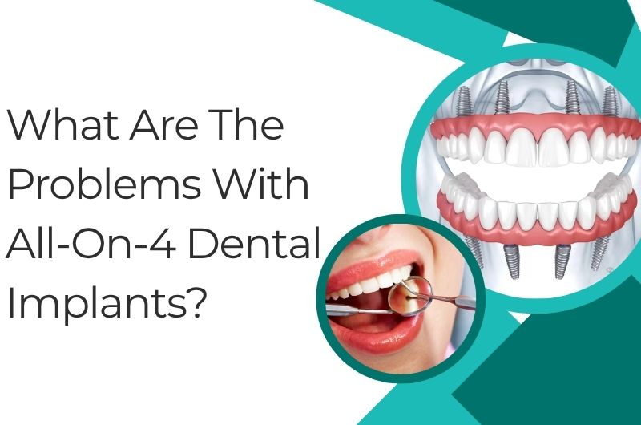

Najczęstsze powikłania All-on-4 i jak je ograniczyć
Przy implantach zębowych All-on-4 mogą wystąpić pewne potencjalne problemy i powikłania. Przede wszystkim warto wiedzieć, że problemy w leczeniu implantami All-on-4 pojawiają się rzadko, o ile zabieg wykonuje doświadczony dentysta.
Potencjalne problemy związane z implantami zębowymi All-on-4 oraz sytuacje, w których doświadczony chirurg w dobrej klinice może je ograniczyć do minimum:
Niepowodzenie implantu (problemy z osteointegracją):
- Niewystarczające zespolenie implantów z kością może prowadzić do poluzowania lub utraty implantu. Przyczyną mogą być takie czynniki jak niewystarczająca gęstość kości, zła higiena jamy ustnej lub palenie.
- Dobra klinika przeprowadza przed leczeniem szczegółową analizę kości (np. tomografię 3D) i ocenia jej gęstość. Doświadczony chirurg może precyzyjnie zaplanować umieszczenie implantów, zwiększając skuteczność osteointegracji.
Infekcja i periimplantitis
- Gromadzenie się bakterii wokół implantu może prowadzić do infekcji lub stanu zapalnego zwanego periimplantitis. Może to skutkować utratą implantu.
- Dobra klinika pracuje w sterylnych warunkach i przestrzega wysokich standardów higieny podczas zabiegów chirurgicznych. Doświadczony chirurg wprowadza implant właściwymi technikami i przekazuje pacjentowi szczegółowe wskazówki dotyczące higieny jamy ustnej. Dzięki regularnym kontrolom ryzyko infekcji jest wcześnie wykrywane i opanowywane.
Problemy z protezą:
- W przypadku protez stałych stosowanych w systemie All-on-4 mogą wystąpić problemy mechaniczne, takie jak pęknięcia, złamania czy poluzowanie śrub. Problemem może być również to, że proteza nie spełnia oczekiwań pacjenta pod względem estetyki lub funkcji.
- Dobra klinika stosuje trwałe i estetyczne materiały (np. cyrkon lub wysokiej jakości akryl). Doświadczony chirurg dba o prawidłowe dopasowanie protezy i ściśle współpracuje z technikami dentystycznymi przy jej projektowaniu. Dobra klinika dostosowuje dopasowanie i estetykę protezy do potrzeb pacjenta.
Problemy z kością i dziąsłami
- Niewystarczająca objętość kości lub recesja dziąseł mogą wpływać na stabilność implantów. Choć All-on-4 sprawdza się u pacjentów z niewielką objętością kości, w niektórych przypadkach może być konieczny dodatkowy przeszczep kości.
- Dobra klinika przeprowadzi szczegółowe planowanie przed leczeniem i w razie potrzeby zaleci dodatkowe zabiegi, takie jak przeszczep kości czy podniesienie dna zatoki. Doświadczony chirurg zapewni długą żywotność implantów, optymalnie wykorzystując dostępną kość.
Uszkodzenie nerwu lub ból
- Nieprawidłowe umieszczenie implantu może spowodować uszkodzenie nerwu lub przewlekły ból, zwłaszcza w żuchwie.
- Dobra klinika precyzyjnie lokalizuje nerwy za pomocą zaawansowanych technik obrazowania (np. CBCT). Doświadczony chirurg umieszcza implanty w bezpiecznej odległości od nerwów i minimalizuje ryzyko powikłań.
Problemy estetyczne i funkcjonalne
- Pacjentom mogą przeszkadzać nienaturalny wygląd protezy oraz problemy funkcjonalne, takie jak trudności z mową lub żuciem.
- Dobra klinika projektuje protezy zgodnie z budową twarzy pacjenta i jego oczekiwaniami estetycznymi. Doświadczony chirurg dba o to, by proteza była zarówno estetyczna, jak i funkcjonalna, prawidłowo planując kąt i położenie implantów.